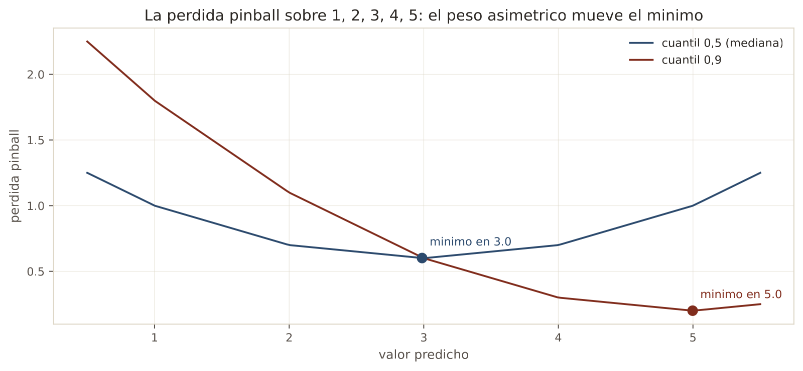
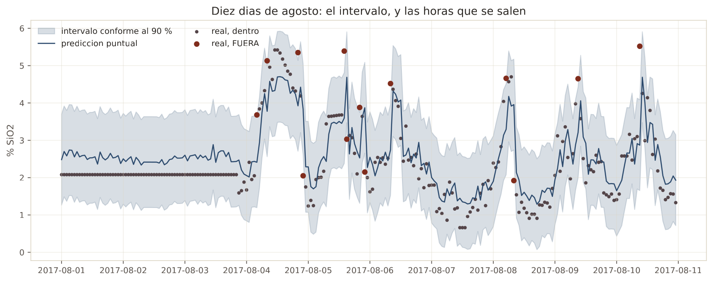
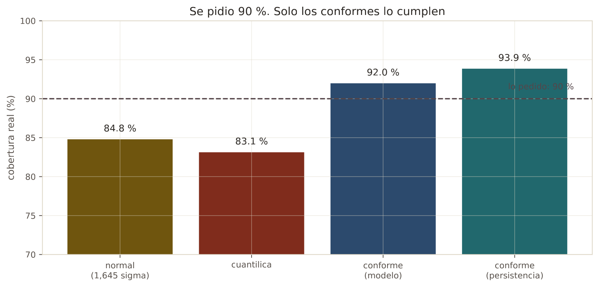
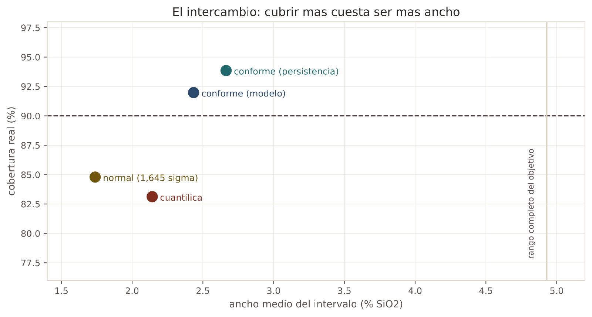

En 30 segundos
- 92,0 %. La cobertura real de un intervalo pedido al 90 %. Es lo primero del proyecto que cumple lo que promete.
- El intervalo normal se queda corto, con 84,8 % cuando pedía 90 %. Es el error más común al dar incertidumbre.
- La regresión cuantílica también falla, con 83,1 %. Aprender el cuantil no garantiza cubrirlo.
- La predicción conforme sí garantiza, y no supone nada sobre la distribución del error.
- Aquí el modelo por fin aporta algo: su intervalo válido es un 9 % más estrecho que el de la persistencia.
Qué resuelve este módulo
Doce módulos dando un número, y todos pierden contra repetir el último análisis. Eso cierra una pregunta y abre otra.
Una planta no solo quiere un valor. Quiere saber cuánto fiarse de él. "La sílice será 2,4" no sirve de nada si el modelo se equivoca la mitad de las veces. "La sílice estará entre 1,6 y 3,4, y este intervalo acierta 90 veces de cada 100" sí es accionable.
La pregunta honesta del módulo: ¿es desplegable un intervalo calibrado, aunque la predicción puntual no lo sea?
Antes de la teoría: un ejemplo de juguete
Paso 1. El problema con un número solo
Un modelo dice 2,4. El operador pregunta cuánto puede fallar y no hay respuesta.
Se puede calcular la desviación de los errores en entrenamiento y multiplicarla por 1,645, que es lo que corresponde al 90 % en una campana. Eso supone que los errores siguen una campana. Casi nunca es cierto.
Paso 2. Aprender el cuantil, con la pérdida pinball
Hay una forma de que el modelo aprenda el percentil 90 directamente: castigar los errores de forma asimétrica.
Cinco lotes que salieron a 1, 2, 3, 4 y 5. Buscamos un número que deje el 90 % por debajo.
perdida = peso · (real − predicho) cuando el real queda POR ENCIMA
= (1 − peso) · (predicho − real) cuando queda POR DEBAJOCon peso 0,9, quedarse corto cuesta nueve veces más que pasarse. Probamos tres valores:
| Predicción | Se quedan por encima | Se quedan por debajo | Pérdida total | Media |
|---|---|---|---|---|
| 3 | 1 + 2 = 3, por 0,9 | 2 + 1 = 3, por 0,1 | 2,7 + 0,3 = 3,0 | 0,60 |
| 4 | 1, por 0,9 | 3 + 2 + 1 = 6, por 0,1 | 0,9 + 0,6 = 1,5 | 0,30 |
| 5 | nada | 4 + 3 + 2 + 1 = 10, por 0,1 | 0 + 1,0 = 1,0 | 0,20 |
El mínimo está en 5, que es el percentil alto de estos cinco números. Con peso 0,5 el mínimo caería en 3, la mediana. El peso asimétrico es lo que convierte una pérdida en un buscador de percentiles.
Paso 3. Conformar, que es otra cosa
La regresión cuantílica aprende un percentil, pero nadie garantiza que acierte el 90 %. La predicción conforme ataca el problema por el otro lado.
Se aparta un bloque de datos que el modelo nunca vio, se miden sus errores ahí, y se ordenan. Veinte errores de calibración, ya ordenados:
0,1 0,1 0,2 0,2 0,3 0,3 0,4 0,4 0,5 0,5
0,6 0,6 0,7 0,7 0,8 0,8 0,9 0,9 1,5 2,0Para cubrir el 90 % hace falta el error que deja al 90 % por debajo. De 20 valores, ese es el 18º.
el 18º error ordenado = 0,9
intervalo = prediccion ± 0,9Paso 4. Comprobar que cubre
De los 20 errores de calibración, 18 son menores o iguales a 0,9. Eso es exactamente el 90 %.
cobertura = 18 / 20 = 0,90Y aquí está lo importante: no se ha supuesto nada sobre la forma de los errores. Ni campana, ni simetría. Solo se han ordenado y contado.
Paso 5. Qué acaba de pasar
Los dos últimos errores valían 1,5 y 2,0, muy por encima del resto. Una campana ajustada a esos 20 números daría una desviación inflada por esos dos, y un intervalo con la anchura equivocada.
El método conforme no se inmuta: cuenta posiciones. Por eso su garantía se sostiene con cualquier modelo y con cualquier distribución de error, que es lo que lo hace útil de verdad.
Glosario
11 términos, en palabras simples
- Predicción puntual. Un solo número como respuesta.
- Intervalo de predicción. Un rango que debería contener el valor real con una probabilidad declarada.
- Cobertura. La fracción de veces que el intervalo contiene de verdad el valor real.
- Nivel nominal. La cobertura que se pidió. Aquí, 90 %.
- Quedarse corto. Cubrir menos de lo prometido. En inglés, undercoverage. Es el fallo grave.
- Pérdida pinball. La pérdida asimétrica que hace que un modelo aprenda un percentil.
- Regresión cuantílica. Entrenar con esa pérdida para predecir un percentil en vez de la media.
- Predicción conforme. Construir el intervalo a partir de los errores medidos sobre un bloque de calibración.
- Conjunto de calibración. Datos que el modelo no vio al entrenar y que tampoco son los de prueba.
- Residuo. El error del modelo en un caso concreto.
- Libre de distribución. Que la garantía no supone ninguna forma concreta de los errores.
Paso a paso
Paso 1. Partir en tres, no en dos
Entrenamiento, calibración y prueba. La calibración sale del último cuarto de los meses de entrenamiento, no de un trozo al azar, para que sus horas sean posteriores a las de entrenamiento.
Paso 2. Construir el intervalo ingenuo, para tener con qué comparar
La desviación de los residuos de entrenamiento por 1,645. Es lo que se hace por costumbre y hay que medir cuánto falla.
Paso 3. Entrenar dos modelos cuantílicos
Uno para el percentil 5 y otro para el 95. Entre los dos queda el 90 % central.
Paso 4. Conformar
Medir los errores absolutos del modelo sobre la calibración, ordenarlos, y coger el que deja el 90 % por debajo. Ese es el radio del intervalo.
Paso 5. Medir la cobertura de verdad
Contar cuántas horas de prueba caen dentro. Es la única comprobación que vale.
Paso 6. Mirar también la anchura
Un intervalo que cubre el 100 % siendo del tamaño del rango entero no sirve. Cobertura y anchura se reportan juntas.
El código, por partes
Paso 1. La pérdida pinball, para entender qué optimiza
def pinball(prediccion, valores, cuantil):
diferencia = valores - prediccion
return np.mean(np.maximum(cuantil * diferencia, (cuantil - 1) * diferencia))línea por línea, 3 entradas
np.maximum(a, b)- El mayor de los dos, elemento a elemento. Es lo que elige la rama según el signo de la diferencia.
cuantil * diferencia- La rama de arriba: cuando el real supera a la predicción, la diferencia es positiva.
(cuantil - 1) * diferencia- La rama de abajo. Con cuantil 0,9 esto vale −0,1 por la diferencia, que es negativa, así que sale positivo.
entrenamiento 2348 h · calibracion 783 h · prueba 960 h
Intervalo pedido: 90 %
Paso 2. Regresión cuantílica, con el boosting de siempre
modelo = HistGradientBoostingRegressor(loss="quantile", quantile=0.95,
early_stopping=True, random_state=0)
modelo.fit(train[feats], train[TARGET])línea por línea, 2 entradas
loss="quantile"- Cambia el error cuadrático por la pérdida pinball. Es el mismo modelo con otro objetivo.
quantile=0.95- Qué percentil aprender. Hacen falta dos modelos, uno para cada extremo del intervalo.
Paso 3. Conformar, en cuatro líneas
residuos = np.abs(calibrate[TARGET] - modelo.predict(calibrate[feats]))
nivel = np.ceil((len(residuos) + 1) * (1 - ALPHA)) / len(residuos)
ancho = np.quantile(residuos, nivel)
bajo, alto = centro - ancho, centro + ancholínea por línea, 3 entradas
np.abs(real - predicho)- Los errores absolutos sobre datos que el modelo nunca vio. Ahí está toda la información que hace falta.
np.ceil((n + 1) * (1 - alpha)) / n- La corrección de muestra finita. Sin ella la garantía es aproximada; con ella es exacta.
np.quantile(residuos, nivel)- El error que deja ese porcentaje por debajo. Ese es el radio del intervalo.
metodo cobertura ancho_medio
normal (1,645 sigma del train) 84.8% 1.739
regresion cuantilica 83.1% 2.142
conforme (split conformal) 92.0% 2.434
conforme sobre la persistencia 93.9% 2.664
El resultado, medido
Qué esperábamos. Que los tres métodos rondaran el 90 % pedido, con diferencias pequeñas de anchura.
Qué salió. Dos de los tres se quedan cortos, y bastante.
| Método | Cobertura real | Anchura media |
|---|---|---|
| Normal, 1,645 sigma | 84,8 % | 1,739 |
| Regresión cuantílica | 83,1 % | 2,142 |
| Conforme, sobre el modelo | 92,0 % | 2,434 |
| Conforme, sobre la persistencia | 93,9 % | 2,664 |

Qué significa. Quedarse corto es el fallo grave de un intervalo, y es el que cometen los dos métodos más habituales.
Un intervalo que promete 90 % y cubre 84,8 % miente a quien lo usa. Si un operador ajusta su margen de seguridad creyendo que se equivoca una vez de cada diez, y en realidad se equivoca una de cada siete, la decisión está mal calibrada.
La regresión cuantílica queda todavía peor, con 83,1 %, y eso sorprende porque su objetivo era justo aprender los percentiles. Aprenderlos sobre el entrenamiento no garantiza acertarlos sobre datos futuros, sobre todo cuando la planta cambió de régimen.
Lo primero del proyecto que cumple lo que promete
La predicción conforme entrega el 92,0 % que prometía cubrir al 90 %.
Es un resultado importante después de doce módulos de resultados negativos. Y no es casualidad ni suerte: la garantía es matemática y no supone nada sobre la forma de los errores. Solo pide que la calibración se parezca a la prueba.
Y aquí el modelo por fin aporta algo
| Cobertura | Anchura | |
|---|---|---|
| Conforme sobre el modelo | 92,0 % | 2,434 |
| Conforme sobre la persistencia | 93,9 % | 2,664 |
Las dos cumplen. La del modelo es un 9 % más estrecha, 2,434 contra 2,664.
Es la primera vez en todo el proyecto que el machine learning gana una comparación limpia contra la persistencia. No en la predicción puntual, sino en la anchura del intervalo a cobertura válida.
La honestidad sobre la anchura

El objetivo va de 0,60 a 5,53 en el periodo de prueba, un rango de 4,93. El intervalo conforme mide 2,434, que es la mitad de ese rango.
Un intervalo así dice poco. "Entre 1,2 y 3,6" cubre desde concentrado excelente hasta fuera de especificación. Cumple lo que promete y su valor operativo es limitado.
Las dos cosas son verdad a la vez, y las dos hay que decirlas.
Lo que este módulo deja abierto
Trece módulos midiendo qué se puede predecir, y el resultado es siempre el mismo: muy poco. Falta explicar por qué los datos de proceso no informan, más allá de constatar que no lo hacen.
La respuesta tiene nombre y no es de machine learning. La planta opera en lazo cerrado, y un lazo de control borra justo la variación de la que un modelo aprendería. El módulo 14 lo trata.
Ojo
- Quedarse corto es el fallo grave. Un intervalo que cubre menos de lo que promete es peor que no dar intervalo.
- 1,645 sigma supone una campana. Los errores de un modelo sobre datos de planta casi nunca la siguen.
- Aprender un cuantil no garantiza cubrirlo. Aquí la regresión cuantílica queda en 83,1 %.
- La calibración no puede ser el conjunto de prueba. Si lo fuera, la garantía se evaporaría.
- La calibración se toma del final del entrenamiento, no al azar. En series de tiempo, un trozo al azar es fuga.
- Cobertura y anchura se reportan juntas. Cubrir el 100 % con el rango entero no es un logro.
- La garantía conforme supone intercambiabilidad. Si la planta cambia de régimen entre calibración y uso, se degrada.
Puente metalúrgico
Un intervalo de predicción es el error declarado de un ensayo de laboratorio. Un informe que dice "62,4 % de Fe" sin más es un informe incompleto. Uno que dice "62,4 ± 0,3" permite decidir si la diferencia con el lote anterior es real o es ruido de medición.
La predicción conforme es el material de referencia certificado. En vez de suponer que el analizador se comporta como una campana, se le pasan patrones conocidos, se anotan sus errores reales y de ahí sale la incertidumbre declarada. No se supone: se mide sobre casos que el instrumento no usó para calibrarse.
Y la conclusión sobre la anchura tiene su equivalente exacto. Un ensayo con una incertidumbre de la mitad del rango de la variable es honesto y no sirve para controlar el proceso. Saber que tu método tiene esa precisión es valioso, porque evita tomar decisiones que no aguanta.
Repaso
¿Por qué un intervalo puede ser útil aunque la predicción puntual sea mala?
Porque responde a una pregunta distinta y accionable: cuánto fiarse.
Una predicción puntual mala obliga a ignorar el modelo. Un intervalo con cobertura garantizada permite decidir con el margen correcto, aunque sea ancho. Si el sistema dice que la sílice estará entre 1,2 y 3,6 con un 90 % de confianza, el operador sabe que no puede descartar salirse de especificación y actúa en consecuencia. El valor está en la garantía, no en la precisión.
El intervalo normal cubre 84,8 % cuando pedía 90 %. ¿Qué salió mal?
La suposición de que los errores siguen una campana.
El método multiplica la desviación de los residuos por 1,645 porque ese es el factor del 90 % en una distribución normal. Los errores de este modelo no son normales: tienen cola, porque en los meses de otro régimen operativo el modelo falla mucho más. Una desviación calculada sobre una mezcla de errores pequeños y errores grandes no describe bien ninguno de los dos, y el intervalo sale demasiado estrecho.
¿Qué garantiza exactamente la predicción conforme, y qué pide a cambio?
Garantiza que la cobertura será al menos la pedida, sin suponer nada sobre la forma de los errores.
Lo consigue midiendo los errores del modelo sobre un bloque de calibración que nunca vio, y usando el percentil empírico de esos errores como radio del intervalo. Lo que pide a cambio es intercambiabilidad: que los datos de calibración y los de uso vengan de la misma población. Es una condición real y aquí se cumple solo a medias, porque la planta cambió de régimen. Aun así entrega 92,0 %.
La regresión cuantílica aprende los percentiles y cubre menos que el método ingenuo. ¿Cómo?
Porque aprende los percentiles del entrenamiento, no los del futuro.
El modelo minimiza la pérdida pinball sobre los meses de marzo a julio, así que sus percentiles describen bien esos meses. En agosto y septiembre la planta opera en otro régimen, con errores distintos, y esos percentiles se quedan cortos. El método conforme sortea el problema porque no aprende el percentil dentro del modelo, sino que lo mide después, sobre datos apartados a propósito.
El intervalo conforme mide 2,434 sobre un rango de 4,93. ¿Es un buen resultado o no?
Las dos cosas, y hay que decirlas juntas.
Es bueno como método. Entrega la cobertura prometida, cosa que ninguno de los otros hace, y su intervalo es un 9 % más estrecho que el de la persistencia. Esa es la primera comparación limpia que el machine learning gana en todo el proyecto. Es malo como producto: un intervalo de la mitad del rango de la variable va desde concentrado excelente hasta fuera de especificación, así que no guía una decisión de operación. Un método correcto sobre datos poco informativos da un resultado correcto y poco informativo.